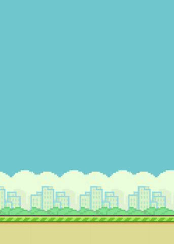

<!DOCTYPE html>
<html lang="en">

<head>
    <meta charset="UTF-8">
    <meta name="viewport" content="width=device-width, initial-scale=1.0">
    <meta http-equiv="X-UA-Compatible" content="ie=edge">
    <title>像素鸟</title>
    <style>
        *{
            user-select: none;
        }
        * {
            margin: 0;
            padding: 0;
        }

        /*游戏界面*/
        #wrap {
            width: 343px;
            height: 480px;
            background: url('img/bg.jpg');
            margin: 0 auto;
            position: relative;
            overflow: hidden;
        }

        /*得分*/
        #score_box {
            width: 56px;
            height: 39px;
            position: absolute;
            left: calc(50% - 28px);
            top: 30px;
            font-size: 0;
            z-index: 100;
        }

        /*开场动画*/
        #flash {
            width: 236px;
            height: 77px;
            background: url('img/head.jpg');
            position: absolute;
            left: calc(50% - 118px);
            top: 90px;
            animation: flash 1s infinite alternate;
        }

        @keyframes flash {
            from {
                top: 90px;
            }

            to {
                top: 120px;
            }
        }

        #flash div {
            width: 40px;
            height: 26px;
            background: url('img/bird0.png');
            position: absolute;
            right: 0;
            top: 18px;
            animation: birdFly 0.5s infinite;
        }

        @keyframes birdFly {
            from {
                background: url('img/bird0.png');
            }

            to {
                background: url('img/bird1.png');
            }
        }

        /*开始按钮*/
        #start_btn {
            width: 85px;
            height: 29px;
            background: url('img/start.jpg');
            position: absolute;
            left: calc(50% - 43px);
            top: 300px;
        }

        /*马路*/
        #banner {
            width: 686px;
            height: 14px;
            position: absolute;
            background: url(img/banner.jpg);
            left: 0;
            bottom: 43px;
            animation: run 1s infinite linear;
        }

        @keyframes run {
            from {
                left: 0;
            }

            to {   
                left: -343px;
            }
        }

        /*小鸟*/
        #bird {
            width: 40px;
            height: 30px;
            position: absolute;
            left: 30px;
            top: 30px;
            display: none;
        }

        /*小鸟死亡样式*/
        .die {
            top: 393px !important;
            transition: all .5s linear;
        }

        .pipe {
            width: 62px;
        }

        .pipe_t_box {
            /*height: 100px;*/
            position: absolute;
            left: 418px;
            top: 0;
            background: url(img/up_mod.png);
        }

        .pipe_t_box img {
            position: absolute;
            bottom: 0;
        }

        .pipe_b_box {
            /*height: 100px;*/
            position: absolute;
            left: 418px;
            bottom: 57px;
            background: url(img/down_mod.png);
        }

        .pipe_b_box img {
            position: absolute;
            top: 0;
        }
    </style>
</head>

<body>
    <!--      -->
    <!-- 游戏界面 -->
        <div id="wrap">
                
        <!-- 得分 -->
                <div id="score_box">
                        
                        
                    </div>
                
        <!-- 开场动画 -->
                <div id="flash">
                        
            <!--  -->
                        <div></div>
                    </div>
                
        <!-- 开始按钮 -->
                <div id="start_btn"></div>
                
        <!-- 马路 -->
                <div id="banner"></div>
                
        <!-- 游戏开始后的小鸟 -->
                
                
        <!-- 柱子的模板 -->
                
        <!-- <div class="pipe_t_box pipe">
            
        </div>
        <div class="pipe_b_box pipe">
            
        </div> -->
            </div>
</body>
<script>
    //小鸟运动最大范围值
    var maxH = 393;
    // 小鸟运动的计时器
    var birdTimer;
    // 小鸟运动的速度
    var speed = 0;
    // 管到高度范围：  min 69  max 393-60
    var blank = 100;
    var maxPipe = 393 - 60 - blank;
    var minPipe = 60;
    // 获取页面中所有的管道(会动态改变)
    var pipes = document.getElementsByClassName("pipe");
    // Defen 
    num = 0;
    //开始按钮
    start_btn.onclick = function (e) {
        var e = e || window.event;
        if (e.stopPropagation) {
            e.stopPropagation();
        } else {
            e.cancleBubble = true;
        }
        // 隐藏开始按钮
        this.style.display = "none";
        // 隐藏开始动画
        flash.style.display = "none";
        // 显示小鸟
        bird.style.display = "block";
        birdFly();
        var pipeTimer = setInterval(createPipe, 2500);
    }

    // 小鸟运动的函数
    function birdFly() {
        birdTimer = setInterval(function () {
            // 获取小鸟当前位置
            var t = bird.offsetTop;
            // 速度发生改变（小鸟并非匀速下落）
            speed += 0.5;
            // 对速度进行限制
            if (speed >= 10) {
                speed = 10;
            }
            // 切换小鸟飞行状态
            if (speed > 0) {
                // 说明小鸟在向下运动
                bird.src = "img/down_bird0.png";
            } else {
                // 小鸟在向上运动
                bird.src = "img/up_bird0.png";
            }
            // 改变位置
            t += speed;
            // 对小鸟运动范围判断
            if (t <= 0) {
                t = 0;
            }
            if (t >= maxH) {
                t = maxH;
                clearInterval(birdTimer);
            }
            bird.style.top = t + "px";

            // 判断碰撞
            for (var i = 0; i < pipes.length; i++) {
                if (isCrash(bird, pipes[i])) {
                    // 如果碰撞游戏结束
                    // 小鸟死亡样式
                    bird.className = "die";
                    // 关闭马路动画
                    banner.style.animationPlayState = "paused";
                    // 关闭页面中所有正在运行的计时器
                    clearTimer();
                }
            }

        }, 30)
    }

    // 小鸟起飞  当点击开始按钮发现小鸟向上飞一下原因是事件事件冒泡 需要阻止
    document.onclick = function () {
        speed = -7;
    }

    // 创建管道的函数
    function createPipe() {
        var flag = true;
        // 上管道
        var pipeUp = document.createElement("div");
        // 记录管道是否加过分数

        pipeUp.className = "pipe_t_box pipe";
        // 为管到设置高度
        var upHeight = randomNum(minPipe, maxPipe);
        pipeUp.style.height = upHeight + "px";
        var imgUp = new Image();
        imgUp.src = "img/up_pipe.png";
        pipeUp.appendChild(imgUp);

        // 下管道
        var pipeDown = document.createElement("div");
        pipeDown.className = "pipe_b_box pipe";
        // 为下管道设置高度
        pipeDown.style.height = maxH - upHeight - blank + "px";
        var imgDown = new Image();
        imgDown.src = "img/down_pipe.png";
        pipeDown.appendChild(imgDown);

        wrap.appendChild(pipeUp);
        wrap.appendChild(pipeDown);

        // 管道运动
        var timer = setInterval(function () {
            // 获取管道位置
            var l = pipeDown.offsetLeft;
            if (flag) {
                if (bird.offsetLeft > pipes[0].offsetLeft + pipes[0].offsetWidth) {
                    getNum();
                    // 标记为不可再加分
                    flag = false;
                }
            }
            // 改变管道位置
            l -= 3;
            pipeUp.style.left = l + "px";
            pipeDown.style.left = l + "px";
            // 运动范围进行判断
            if (l <= -70) {
                clearInterval(timer);
                // 清除管道
                pipeUp.remove();
                pipeDown.remove()
            }
        }, 15)
    }
    // 碰撞检测的函数
    function isCrash(b, p) {
        // 获得元素位置
        var bl = b.offsetLeft;
        var bt = b.offsetTop;
        var br = bl + b.offsetWidth;
        var bb = bt + b.offsetHeight;

        var pl = p.offsetLeft;
        var pt = p.offsetTop;
        var pr = pl + p.offsetWidth;
        var pb = pt + p.offsetHeight;

        // 对位置关系进行判断
        if (bl > pr || bt > pb || br < pl || bb < pt) {
            return false;
        } else {
            // 一定碰撞了
            return true;
        }
    }

    // 关闭页面中所有计时器
    function clearTimer() {
        // 为了确定当前页面中已经开启多少个计时器
        // var x ;
        // setInterval(function(){
        //         var x = setInterval(function(){},1)
        // },1)
        for (var i = 0; i <= 10000; i++) {
            clearInterval(i);
        }
    }

    // 得分函数
    function getNum() {
        // 得分加1
        num++;
        if (num < 10) {
            one.src = 'img/'+ num + ".jpg";
            console.log(num);
        } else {
            // 十位数图片
            ten.src = 'img/'+ parseInt(num / 10) + ".jpg";
            // 个位数图片
            one.src = 'img/'+ num % 10 + ".jpg";

        }

    }
    // 随机数函数
    function randomNum(min, max) {
        return Math.floor(Math.random() * (max - min) + min);
    }
</script>

</html>
